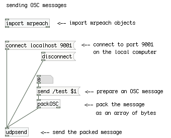
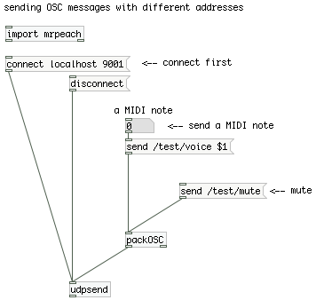
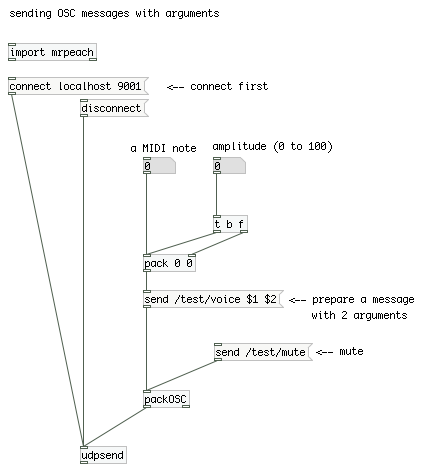
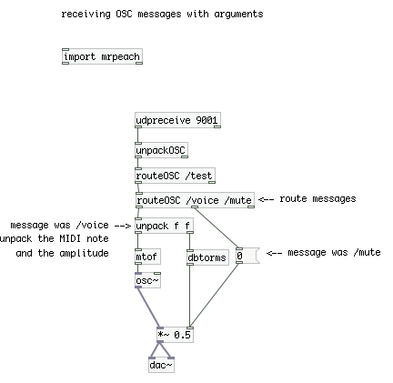
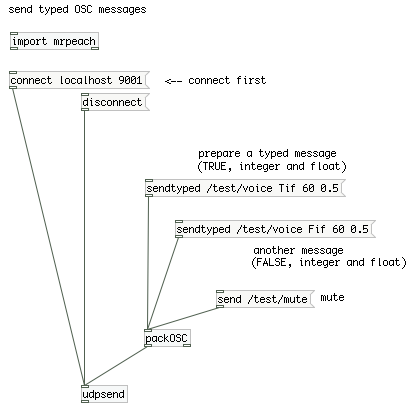
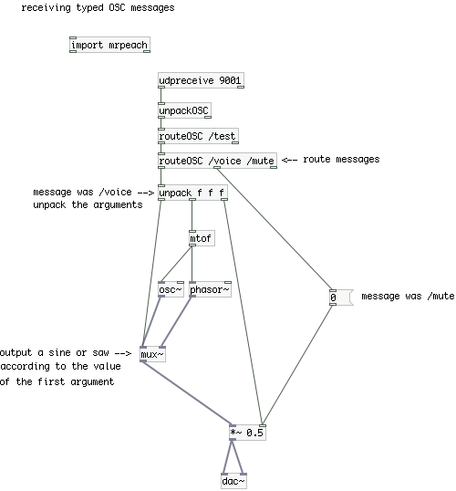
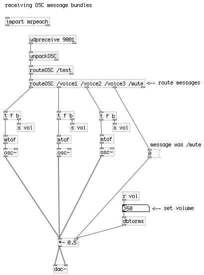

Open Sound Control (OSC)
The OSC objects are for sharing musical data over a network. OSC is a standard that lets you format and structure messages. OSC enables communication at a higher level than the PureData [netsend] objects and is both more flexible and more precise than MIDI. OSC is network enabled, using common network cables and hardware.
Using OSC you can exchange data with a number of devices, such as Lemur, iPhone (through OSCulator), Monome, or applications such as Ardour, Modul8, Reaktor and many more. Most modern programming languages are OSC enabled, notably Processing, Java, Python, C++, Max/MSP and SuperCollider.
Setting up an OSC connection
There are several OSC implementations in PureData. At the time of writing, the mrpeach implementation is best supported. PureData is in the process of migrating to mrpeach OSC objects, but in the current release you still have to import them explicitly.
Sending a simple message

osc_udpsend.pd
Sending a connect message to an [udpsend] object opens an UDP connection to another computer. As with [netsend], you have to provide an IP address or hostname, and a port number.
The UDP connection you just opened can only really send bytes. In order to send an OSC message over the opened connection, you have to pack it first, using the [packOSC] object.
Receiving a simple message

osc_udpreceive.pd
The [udpreceive] object tells the patch to listen to a given port number.
The OSC message has to be unpacked using the [unpackOSC] object.
IP addresses, hostnames
If both sending and receiving PureData patches are on the same computer, you can use the special loopback interface: the IP address is 127.0.0.1 and the hostname is "localhost".
If both computers are on a local network, you can use their network names, or else, to find out a computers IP address, open a terminal and type "ifconfig" (Mac/Linux) or "ipconfig /all" (Windows).
If you want to open a remote connection to a computer over the internet, consider using TCP instead of UDP (see below) and proceed as with a local connection.
Ports
Every computer has a large number of ports. Each service (such as a webserver, a database etc.) may listen or send data through it's assigned port. Which port is used for what is a matter of configuration, but PureData uses port 9001 by default. You can choose another port if you want to, just make sure the port you choose is not already in use. If you are communicating with another application, you will have to find out which port it is using.
UDP vs. TCP
In all these examples, you can replace the [udpsend] and [udpreceive] objects by their corresponding TCP counterparts [tcpsend] and [tcpreceive]. The TCP protocol is much more reliable than UDP, so if you are connecting to a computer over the internet, or data packets are lost or shuffled underway, use TCP.
The OSC address pattern
The first part of an OSC message is an URL-style address (in the previous example, “/test”). The address lets you route the data on the receiving end.
This example sends 2 different OSC messages. Messages are told apart by their address components (/test/voice and /test/mute).

osc_pathsend.pd
On the receiving end, the messages are routed using the [routeOSC] object and used to control an oscillator.

osc_pathreceive.pd
It is important to understand that OSC does not come with predefined messages, like MIDI does. It is up to you to define the messages you want to send and receive.
OSC arguments
An OSC message can have any number of arguments. This example creates a message with 2 arguments for note (MIDI note number) and amplitude.

osc_argssend.pd
On the receiving patch, the arguments are unpacked using the [unpack] object, and used to control an oscillator's pitch and amplitude.

osc_argsreceive.pd
Types
The previous examples all send typed-guessed messages. It is also possible (and good practice) to set the types of the arguments.
Common types are:
i: integer
f: float
s: string
T: TRUE
F: FALSE
This example uses the [sendtyped] object to send a boolean (true or false), an integer (a MIDI note number) and a float (amplitude).

osc_typesend.pd
Depending on the value of the first argument (the boolean argument), the receiving patch puts out a sine or a sawtooth wave.

osc_typereceive.pd
Note that PureData and OSC use different types. PureData only knows floats, strings and symbols.
Bundles
Sometimes you might want to send several messages at the same time. This example sends one bundle containing 3 notes.
Bundles are enclosed in square brackets. Inside the brackets, you can pack any number of messages.

osc_bundlesend.pd
Receiving a bundle is no different than receiving a single message.

osc_bundlereceive.pdDesigning your namespace
Unlike MIDI, OSC requires you to define your own messages. This is one of OSC's main advantages, and if you are doing anything more complex than the examples above, you should start by getting your set of messages (your namespace) right. There is no single strategy to do this, but here are some ideas to get you started.
Connecting to hardware or external applications
The easiest case, since these will come with their own predefined set of commands. You will find them specified in the documentation. Not much you can do here but stick to the specs.
Connecting to another PureData patch or to your own application written in another language
Avoiding name conflicts: Keep in mind that you, or the person using your patch, are on a network. This network is shared by a number of computers running a number of applications, some of which might be using OSC too. So you should be careful to avoid name conflicts. A conflict happens when two applications use the same address pattern but mean different things. To avoid this, the first part of your address pattern should be unique. A foolproof, albeit pedantic, method is to use your domain as a prefix for all your messages e.g. /net/mydomain/...
Type conversion caveats: PureData and OSC use different data types, so type conversion takes place every time you send or receive anything else than a float or a string. Due to the way data is handled internally, PureData can only work accurately with 24 bit numbers. Above this, integers gradually loose precision. Since OSC can carry 32 bit integers, you will get strange results above 16777216.
Using a predefined namespace
If this is your life's work (or your idée fixe), then using a predefined, domain-specific namespace might be a good move. Examples of these include: SYNoscopy for MIDI style controls (specification and examples) and GDIF, for music related movements and gestures. You can also look at one of the many open source applications listed at opensoundcontrol.org for inspiration.